Basic Vulnerability Scanning Using Captured Packets
Introduction
Analyzing network traffic is essential for identifying security vulnerabilities and unauthorized activity within an organization.
My goal was to demonstrate how simple tools can be created using built-in or easily accessible libraries to scan and filter packet capture (pcap) files.
These files, recorded at network borders, provide valuable insights into protocol usage, traffic routing, and potential security risks.
By leveraging packet captures from online sources and my home network, I developed a series of scripts that utilize the tshark API to analyze network traffic efficiently.
Since tshark uses the same filtering syntax as Wireshark’s GUI, I chose it for its familiarity and ease of use in extracting critical packet information.
My tool was designed in two formats: a single script that performs all necessary tasks in one run and a modular version consisting of four separate scripts, each addressing a specific security concern.
This modular approach allows for more focused analysis, helping security professionals pinpoint potential risks such as outdated protocols, unauthorized scans, or unexpected port activity.
Network Traffic Analysis & Security Tools
I developed several BASH-based network scanning tools leveraging the tshark API to analyze packet capture files for security insights. These tools demonstrate my proficiency in scripting, network security analysis, and protocol filtering.
1. Protocol-Specific Packet Scanner
Built scan1.sh to filter traffic by protocol (FTP, Telnet, SSL) from packet capture files.
- Validated outputs against Wireshark’s GUI and predefined capture files.
- Used Wireshark display filters and tshark commands for accurate filtering.
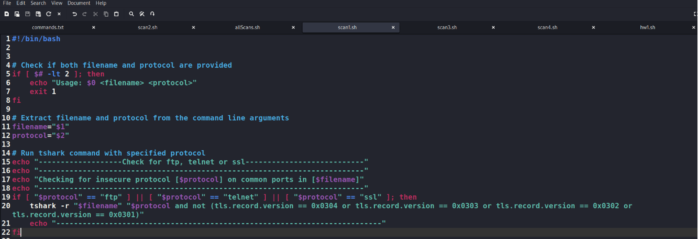
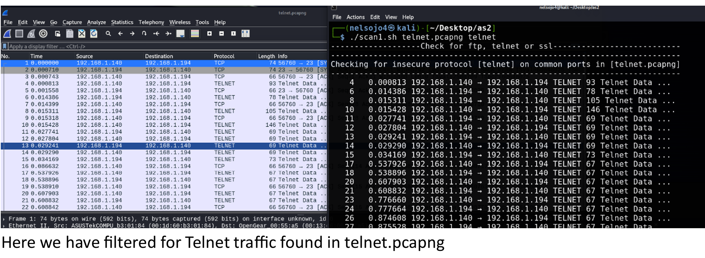
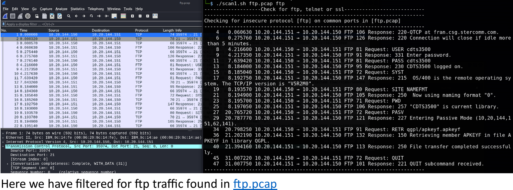
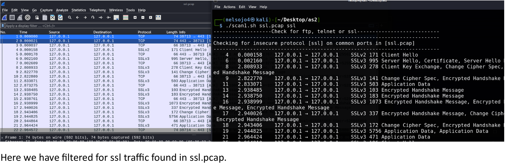
Security Applications:
- For Security Engineers: Identifies outdated or insecure protocols.
- For Hackers: Helps locate exploitable network protocols.
2. Port-Protocol Mismatch Detector
Developed scan2.sh to detect unexpected traffic on well-known ports (22, 80, 53).
- Tested using Packet Sender and validated results with Wireshark.
- Demonstrated mismatched port/protocol combinations to identify misconfigurations.
- Revealed potential exploit entry points for attackers.
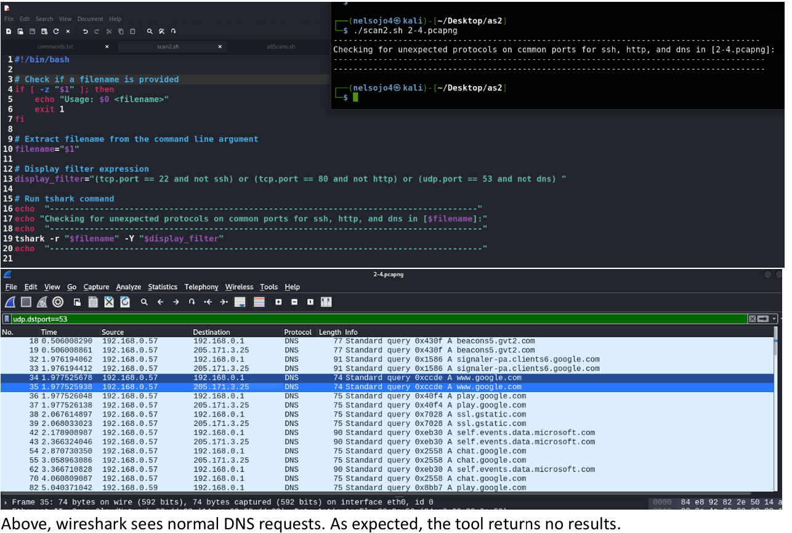
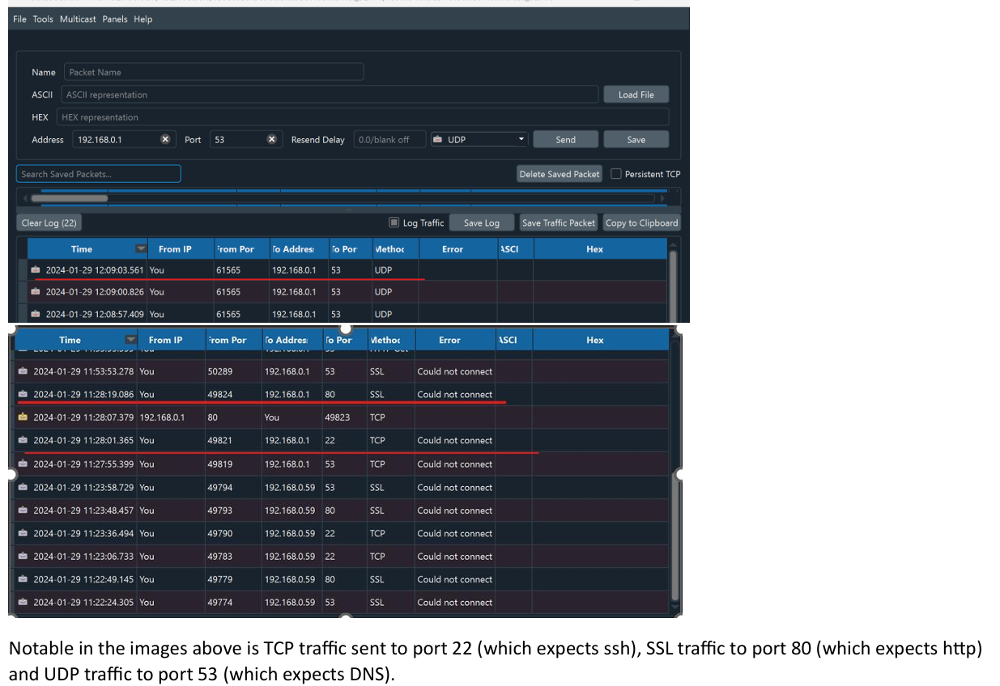
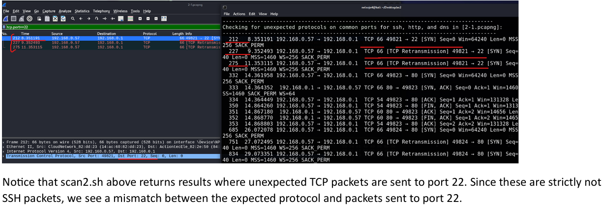
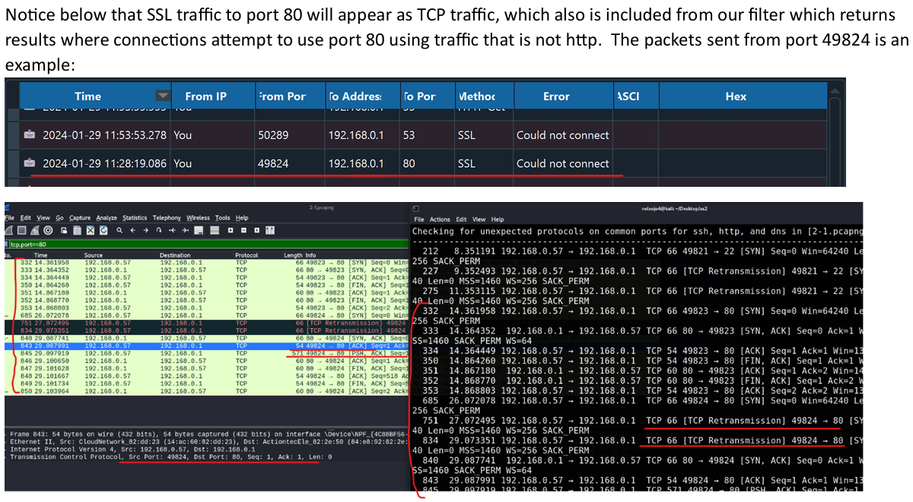
Security Applications:
- For Security Engineers: Identifies misconfigurations.
- For Hackers: Uncovers potential attack vectors.
3. TLS Version Detection
scan3.sh identifies TLS 1.0 and 1.1 usage in a network capture file.
- Filters packets to report outdated TLS versions while ignoring TLS 1.2 and 1.3.
- Simulated TLS 1.1 traffic by editing hex values in capture files for testing.
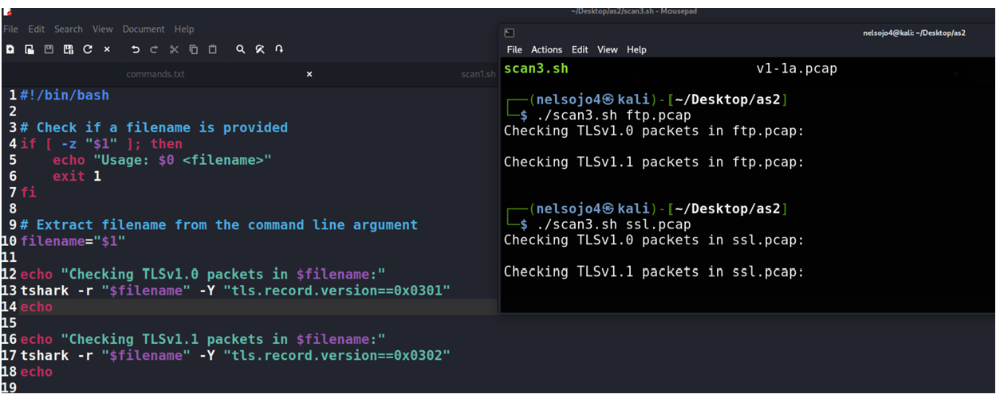
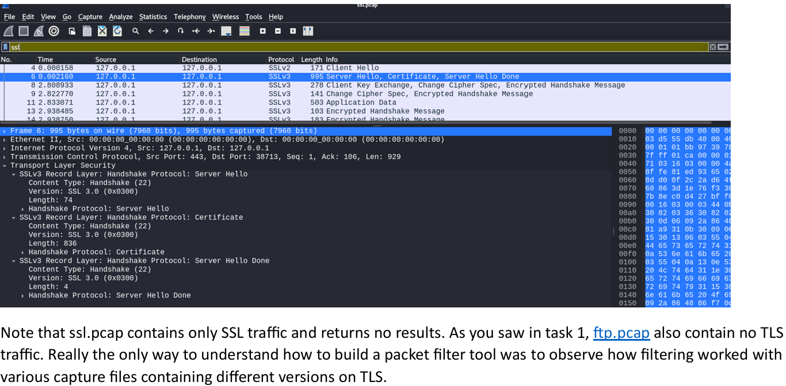
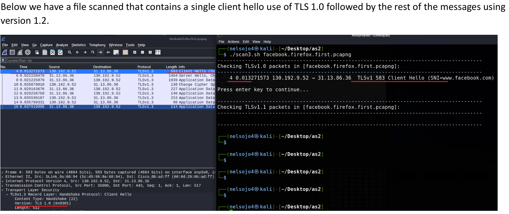
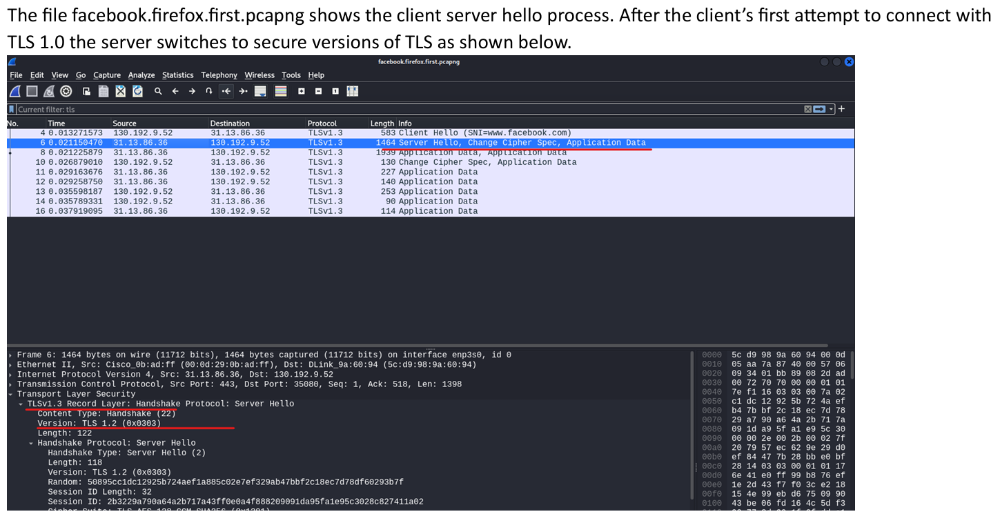
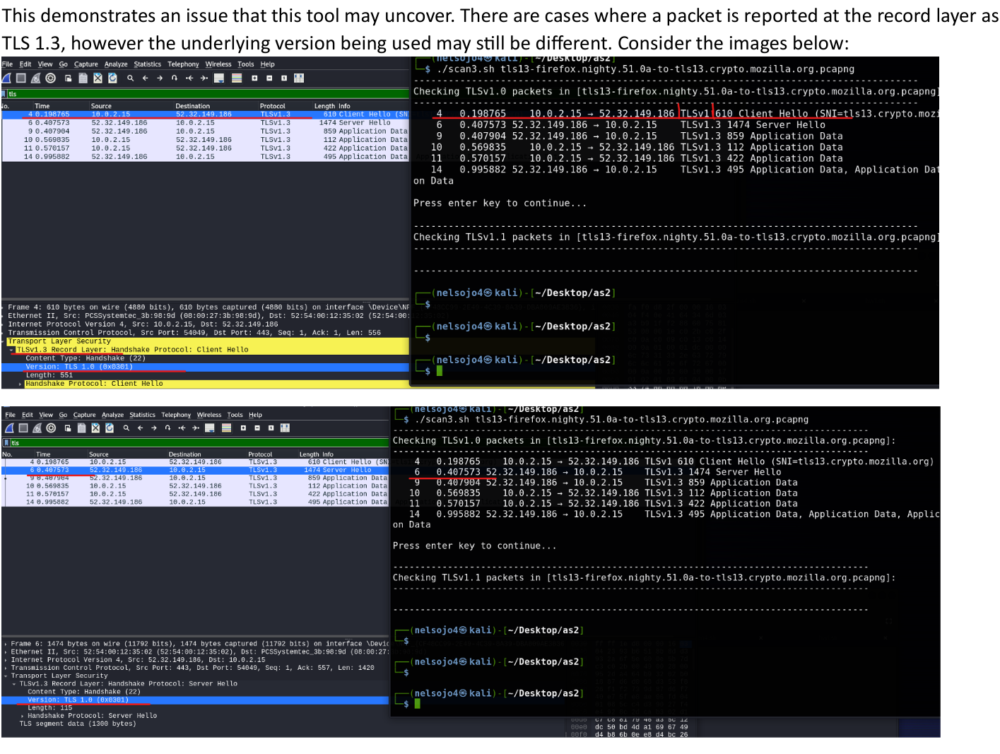
Security Applications:
- For Security Engineers: Detects outdated TLS usage.
- For Hackers: Identifies servers vulnerable to weak encryption exploits.
4. ARP Request Detection
scan4.sh analyzes ARP traffic to detect scanning activity.
- Counts ARP requests per IP and flags those exceeding 100 requests.
- Demonstrated real-world scans using
arp-scanin Kali Linux.
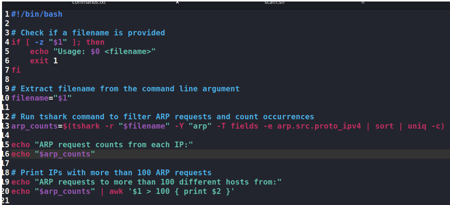
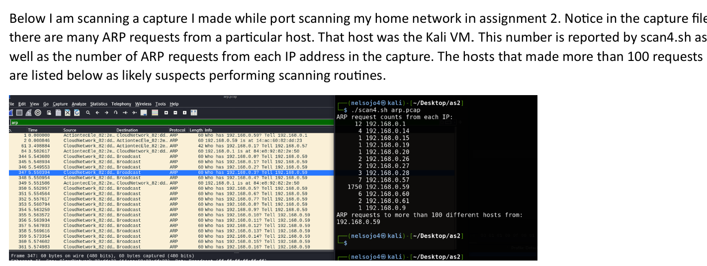
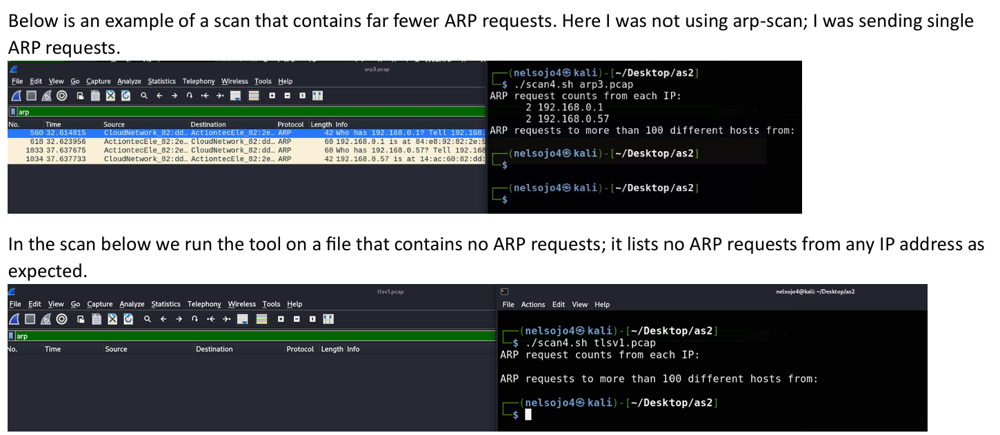
Security Applications:
- For Security Engineers: Detects network reconnaissance attempts.
- For Hackers: Identifies scanning activity from other attackers.
Conclusion
This project demonstrated techniques for analyzing open ports, identifying running services, and detecting insecure traffic. It highlighted how attackers exploit misconfigurations like unexpected ports or outdated protocols to gain access. Key takeaway: moving services to uncommon ports is an obscurity tactic, not real security.
Insights reinforce the importance of proactive network monitoring and layered defenses beyond basic port configurations.